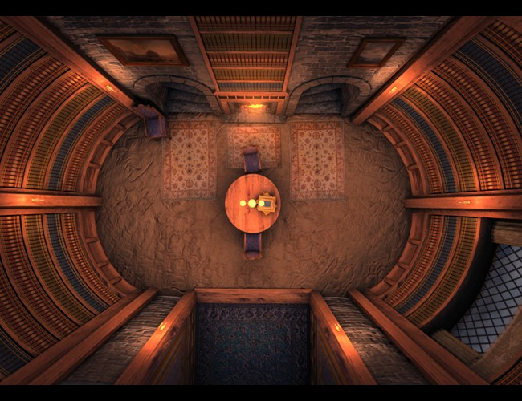

« Pas le temps d'aller à la bibliothèque ? Faites la venir à vous ! »
- « Je suis une comète qui embrase le ciel. Une feuille d'or que les rafales emportent. Un refrain entraînant fredonné par la foule. Je suis les alizés qui caressent les eaux. »
La fille de Brooklyn - « Ce bonheur est difficile à restituer en mots parce qu'il était fait d'ambiances calmes, de petits riens, de confidences entre nous, d'éclats de rire partagés, de moments à tout jamais perdus. C'est le parfum envolé de l'enfance. »
Une vie - « Je suis toujours un donut. J'aimerais bien être un petit pain mais je suis toujours un donut. »
Après toi - « Notre fonction est la reproduction : nous ne sommes pas des concubines, des geishas ni des courtisanes. Au contraire : tout a été fait pour nous éliminer de ces catégories. Rien en nous ne doit séduire... »
La Servante Ecarlate - « Aucun d'entre eux n’aimaient non plus l'idée que les piratages informatiques les plus graves, les moins scrupuleux, étaient commis, non par des rebelles solitaires ou des hors-la-loi, mais par des géants au sein de l’État qui voulaient contrôler la population. »
Millénium : Ce qui ne me tue pas